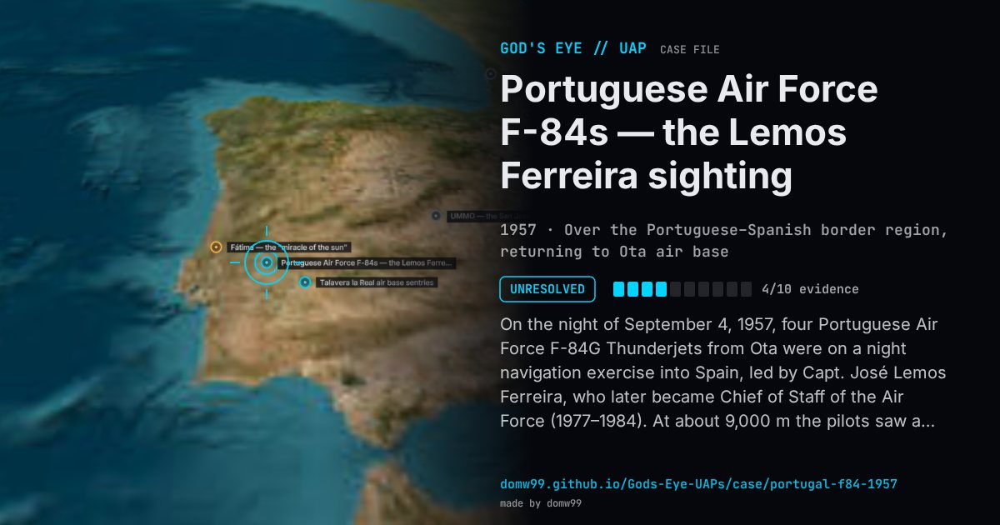

Portuguese Air Force F-84s — the Lemos Ferreira sighting

On the night of September 4, 1957, four Portuguese Air Force F-84G Thunderjets from Ota were on a night navigation exercise into Spain, led by Capt. José Lemos Ferreira, who later became Chief of Staff of the Air Force (1977–1984). At about 9,000 m the pilots saw a yellowish sphere just above the horizon that “was not a star, a planet or a comet”; it grew and shrank, “in seconds, turning from a billiard ball into a basketball”, became intense red and elongated, and four smaller yellow spheres separated from it and took up positions around it. When one pilot felt the objects were closing on them fast, the formation broke up; when it re-formed, nothing was visible. The pilots wrote a joint report, which Ferreira believed was passed to NATO; it has not been published. Accounts disagree on the route (towards Córdoba and Cáceres, or back from Granada over Portalegre and Coruche). Ferreira, who never offered an explanation, noted that hunters near Coruche saw “a dance of lights” at the same time, and that the Coimbra geophysical institute recorded magnetic disturbances.
What was seen
Shape: A yellowish sphere that swelled and shrank, turned red and “sausage-shaped”, and released four smaller yellow spheres
Witnesses: Capt. José Lemos Ferreira and the pilots of three other F-84G Thunderjets
Duration: About 35 minutes
Sources
- RTP / Lusa — General Lemos Ferreira recalls the encounter 50 years later (in Portuguese)
- Sábado — José Lemos Ferreira, the general who swore he saw a UFO, has died (in Portuguese)
Browse
- Portugal
- 1950s
- Unresolved
- Aviation encounters
- Many independent witnesses
- Military witnesses
- Pilot and aircrew witnesses
- Spheres and orbs